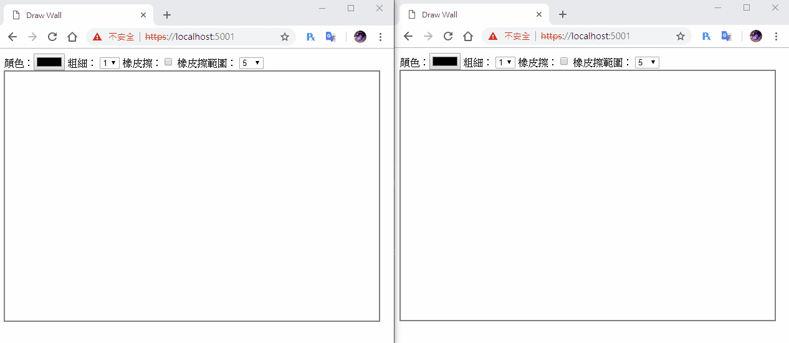

[鐵人賽Day14] 實作一個共用塗鴉牆 (3) - 新增橡皮擦功能
文章目錄
今天我們要幫塗鴉牆加上橡皮擦的功能，只能畫不能擦掉感覺真的是蠻奇怪的，當然擦的時候也要同時擦全部的畫版。
橡皮擦功能
這邊我在實作時，一開始是想到只有用透明色或是白色把畫過的地方重新上色就行，後來發現有Canvas有內建API可以達成。
使用clearRect()來做橡皮擦功能
clearRact可以設定一個矩形範圍來取消畫過的元素，先來看看定義
clearRact(x, y , width, height)
- x：清除x軸位置
- y：清除y軸位置
- width：清除寬度
- height：清除高度
先建立使用的Html element，一個checkbox切換畫筆或橡皮擦，一個select控制橡皮擦長寬，這部分加在畫筆粗細後方
橡皮擦：<input id="eraser" type="checkbox">
橡皮擦範圍：
<select id="eraserWidth">
<option>5</option>
<option>10</option>
</select>
JS載入設定要素
var eraser = document.getElementById('eraser');
var eraserWidth = document.getElementById('eraserWidth');
然後我們要修改一下mousermove的設定，在橡皮擦啟動時，是要擦掉而不是畫圖
canvas.addEventListener('mousemove', function (e) {
if (draw) {
var newPos = [e.pageX - canvas.offsetLeft, e.pageY - canvas.offsetTop];
// 判斷橡皮擦是否啟用
if (eraser.checked) {
var _eraserWidth = eraserWidth.value;
ctx.clearRect(tempPos[0] - (_eraserWidth / 2), tempPos[1] - (_eraserWidth / 2), _eraserWidth, _eraserWidth);
} else {
ctx.beginPath();
ctx.moveTo(tempPos[0], tempPos[1]);
ctx.lineTo(newPos[0], newPos[1])
ctx.closePath();
ctx.stroke();
connection.invoke("SendDraw", {
"startPos": tempPos,
"endPos": newPos,
"color": ctx.strokeStyle,
"lineWidth": ctx.lineWidth
}).catch(function (err) {
return console.error(err.toString());
});
}
tempPos = newPos;
}
});
x和y扣掉寬度除2是為了讓範圍中心對到點擊位置上，因為我覺得這樣會比較抓距離，還有記得跟Draw一樣的動作要拉出來。
同步到SignalR
首先我們的JSON格式需要更新下，我們多加一個mode和eraserWidth，mode用來辨認到底是畫筆還是橡皮擦，
其實也能寫成isEraser或isPen也行，但是Canvas其實還有很多其他功能，像是畫矩形、三角形、圓形、貝茲曲線…..，
所以我們要讓他可以變化大一點，用Mode來做這變數名會比較適合。
{
"mode": "line",
"startPos": [10, 20],
"endPos": [40, 50]],
"color": "orange",
"lineWidth": 10,
"eraserWidth": 5
}
然後一樣在mousemove時傳回Server
canvas.addEventListener('mousemove', function (e) {
if (draw) {
var newPos = [e.pageX - canvas.offsetLeft, e.pageY - canvas.offsetTop];
// 判斷橡皮擦是否啟用
if (eraser.checked) {
var _eraserWidth = eraserWidth.value;
ctx.clearRect(tempPos[0] - (_eraserWidth / 2), tempPos[1] - (_eraserWidth / 2), _eraserWidth, _eraserWidth);
} else {
ctx.beginPath();
ctx.moveTo(tempPos[0], tempPos[1]);
ctx.lineTo(newPos[0], newPos[1])
ctx.closePath();
ctx.stroke();
}
// 回傳動作
connection.invoke("SendDraw", {
"mode": eraser.checked?'eraser':'line',
"startPos": tempPos,
"endPos": newPos,
"color": ctx.strokeStyle,
"lineWidth": ctx.lineWidth,
"eraserWidth": eraserWidth.value
}).catch(function (err) {
return console.error(err.toString());
});
tempPos = newPos;
}
});
接收事件ReceiveDraw我們需要加上一個switch來判定mode是什麼，在做不一樣的事情
connection.on("ReceiveDraw", function (json) {
switch (json.mode) {
case 'line':
ctx.strokeStyle = json.color;
ctx.lineWidth = json.lineWidth;
ctx.beginPath();
ctx.moveTo(json.startPos[0], json.startPos[1]);
ctx.lineTo(json.endPos[0], json.endPos[1])
ctx.closePath();
ctx.stroke();
break;
case 'eraser':
var _eraserWidth = json.eraserWidth;
ctx.clearRect(json.startPos[0] - (_eraserWidth / 2), json.startPos[1] - (_eraserWidth / 2), _eraserWidth, _eraserWidth);
break;
}
});
後端部分只需要更新DrawModel.cs的屬性就行了
public class DrawModel
{
public string mode { get; set; }
public int[] startPos { get; set; }
public int[] endPos { get; set; }
public string color { get; set; }
public int lineWidth { get; set; }
public int eraserWidth { get; set; }
}
到這邊就完成啦！
DEMO
